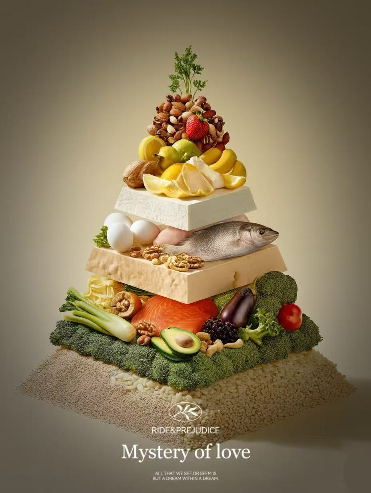

Nutrition Transparent: Bites with Data
Every ingredient, every meal, broken down into precise numbers.

Why Nutrition Data Matters
When aiming for fat loss or balanced nutrition, guesswork can derail progress. Our recipes come with lab-verified nutrition data to help you track:
- Calories: Precise per-serving counts to align with your daily goals.
- Macronutrients: Protein, carbs, and healthy fats in optimal ratios.
- Micronutrients: Vitamins (A, C, D) and minerals (iron, calcium) for overall health.
- Fiber & Sugar: Hidden sugars and gut-friendly fiber content.
How We Calculate
Our data is sourced from USDA food databases and cross-checked with professional nutritionists. We account for portion sizes and cooking methods to ensure accuracy.
Sample Meal Breakdown (Grilled Chicken Salad)
Food Nutrition Database
Explore our comprehensive database of food nutrition information. Find detailed nutritional breakdowns for hundreds of foods, including calories, protein, fats, vitamins and minerals.
Explore Food Nutrition Data
Back to Nutrition Main Page
Food Nutrition Information
Explore detailed nutritional data for various foods. Click on any food to see comprehensive breakdowns of calories, proteins, fats, and more.